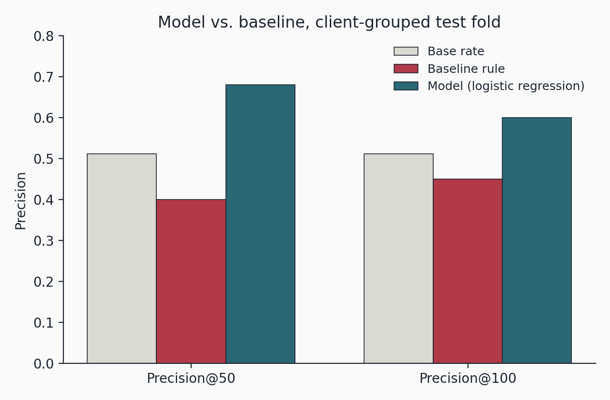
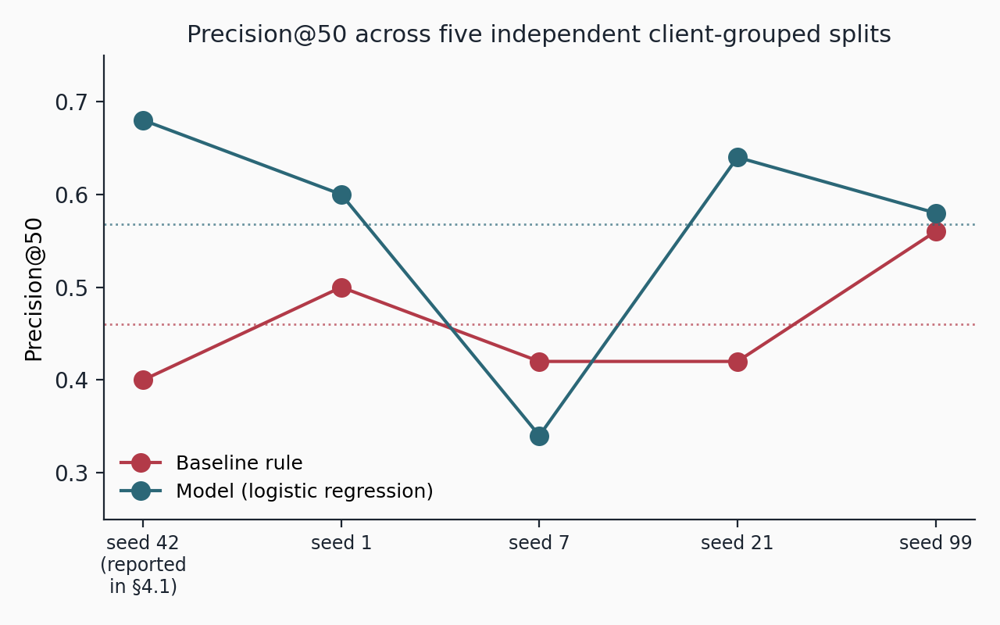
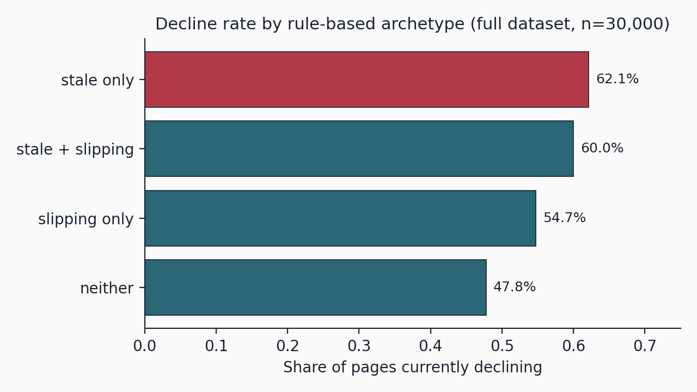

Code & data: github.com/Debbie1236-cmd/flyrank-ml-internship
At FlyRank, an SEO and content intelligence agency, a central content team can only review a limited number of pages each week across its client portfolio, so the decision this system supports — and the metric fixed before training — is the order of that review: Precision@50. The evaluation covers 30,000 pseudonymized content pages across 32 clients, split by client rather than by row, so no client's pages appear on both sides of training and testing. An audited two-signal rule (staleness and search-position slippage) is compared against a logistic regression model trained on eight features spanning freshness, search visibility, keyword opportunity, and engagement. On the reported client-grouped test split, the model reaches 0.680 Precision@50 against the rule's 0.400; repeating the evaluation across five independent client-grouped splits shows this is close to a best case, with a mean lift of 0.108 (0.568 vs 0.460) and one split where the rule actually wins. A parallel check on the original split shows a naive random-row split would have inflated the model's apparent score to 0.740, overstating it by 0.060. The output is a ranked, decision-support queue for a human reviewer, not an automated publishing decision, and every claim below is stated as observed or measured rather than causal.
This work addresses a live operational problem at FlyRank, an SEO and content intelligence agency serving dozens of client accounts: content teams have finite bandwidth to review pages for a refresh, and with a portfolio spanning many clients, it is not obvious which few pages deserve attention first in a given week. A page that quietly loses search traffic costs a business real visitors until someone notices — but a content team reviewing a large portfolio cannot check every page every week. The practical decision is not "is this page declining?" in the abstract; it is "which fifty pages should a reviewer look at first this week?" This paper reports a decision-support ranker built for exactly that queue, evaluated the way it would actually be used: split by client rather than by row, checked for whether the split itself was doing the work, and checked again for whether one split was doing the work.
Three claims are made below, each traceable to a specific notebook cell in the accompanying repository (§7).
One observation is one content page for one client, drawn from a single snapshot of trailing 90-day search performance. Source: the FlyRank ML Internship dataset, a pseudonymized feature extract of 30,000 content pages across 32 clients, drawn from FlyRank's broader Search Intelligence warehouse. client_id and content_id are pseudonymous hashes, used only for grouping — never as model features.
is_declining_label = 1 if trend_direction == "down", else 0 — a proxy built from a trend calculation already present in the dataset, not a directly observed outcome such as lost revenue. Base rate across the full dataset: 54.2%. How trend_direction itself was computed upstream is not disclosed in this pseudonymized extract — it arrives as a pre-computed categorical field, so its provenance cannot be independently audited from this dataset alone (§5.1).
Eight engineered features span freshness (days_since_last_update), search visibility (avg_position, has_position_data), keyword opportunity (search_volume, competition, has_keyword_data), and engagement (ctr, engagement_rate). trend_direction and trend_pct — the columns the label is derived from — are excluded from the feature set entirely.
4.0% of pages carry no tracked visibility/position data at all; these are not scored the same way as tracked pages and are routed to manual review rather than silently deprioritized (§6.4). This is a single month's cross-section, not a matched time series — clients began tracking at different points, so history length varies by client, and there is no later period available here against which to test whether today's ranking predicts future decline.
An audited two-signal rule, frozen before any model was trained: flag a page as risky if it is stale (90+ days since its last update) or slipping in search position (average position worse than 10); score = the count of triggered flags (0, 1, or 2). Transparent, but ties every page that trips both flags at the same score regardless of how stale or how far slipped.
Logistic regression over the eight features above, chosen because it weights each signal separately instead of the rule's flat +1, and lets signals combine — a page that is old and low-ranked but still shows strong engagement can be learned as comparatively stable, rather than automatically flagged. Missing values in search_volume and competition are filled with 0 before scaling (absence is itself informative and separately captured by has_keyword_data). Features are standardized with scikit-learn's StandardScaler, fit on the training fold only. The model uses scikit-learn's LogisticRegression with default settings (L2 penalty, C=1.0, lbfgs solver) except max_iter=1000; all stochastic components use a fixed seed (42) unless noted otherwise in §4.5.
Train/test split via GroupShuffleSplit, grouped by client_id, 80/20 (train: 25 clients, 23,837 rows; test: 7 clients, 6,163 rows, for the split reported in §4.1). No client's pages appear on both sides. This matters because the deployed use case is scoring a client's pages the model may never have trained on; a row-level random split would let the model partially learn client-specific baselines rather than generalize.
Three checks were run before trusting the headline number: (i) re-scoring the identical model on an ungrouped, random row-level split, to measure how much of the apparent lift comes from client leakage rather than genuine generalization (§4.2); (ii) removing has_position_data — the single strongest feature — and re-training, to check whether it was encoding the label rather than a real behavioral pattern (§4.3); (iii) repeating the entire client-grouped evaluation on four additional independent splits, to check whether the headline comparison holds beyond the one split it was measured on (§4.5).
On the client-grouped test fold (7 clients, 6,163 pages, none seen during training):
| Method | Precision@50 | Precision@100 |
|---|---|---|
| Base rate (random selection) | 0.511 | 0.511 |
| Baseline rule | 0.400 | 0.450 |
| Logistic regression (proposed) | 0.680 | 0.600 |
At the top of the queue — the slice a reviewer actually works through — the model is a clear lift over both the rule and chance on this split: 68% of its top 50 picks are genuinely declining pages, against 40% for the rule and 51% from picking at random. Whether this particular lift is typical or a favorable draw is checked directly in §4.5.

Re-scoring the identical model on a random, row-level split (instead of grouping by client) raised Precision@50 from 0.680 to 0.740 on the original split — a 0.060 optimistic bias attributable to clients appearing on both sides of that split. This is why §3.3 groups by client: the row-level number would have overstated real-world performance on a client the model has never encountered.
Removing has_position_data, the model's strongest feature, drops Precision@50 from 0.680 to 0.640 on the original split — a real but modest decline (0.040), not a collapse toward the 0.511 base rate. This is consistent with the feature encoding a genuine behavioral pattern (tracked vs. untracked pages behave differently), rather than smuggling the label in indirectly; trend_direction and trend_pct, the label's actual source columns, were never included as features at any point.
The rule's own top-20 manual review (Week 4) surfaced its failure mode directly: 9 of its top 20 picks were false alarms, because a flat rule cannot distinguish an old, low-ranked page that is still holding steady traffic from one that is actually declining — it scores both identically. The model's remaining errors concentrate in the same territory: borderline pages where engagement signals do not clearly separate the two cases. This is the expected ceiling of a linear model working from eight features, not an implementation bug.
The comparison in §4.1 uses one client-grouped split. Repeating the identical pipeline on five independently drawn client-grouped splits (same 80/20 ratio, different random seeds, 7 test clients each) shows that split to be close to a best case rather than a typical one:
| Split (seed) | Baseline P@50 | Model P@50 |
|---|---|---|
| 42 — reported in §4.1 | 0.400 | 0.680 |
| 1 | 0.500 | 0.600 |
| 7 — rule wins | 0.420 | 0.340 |
| 21 | 0.420 | 0.640 |
| 99 | 0.560 | 0.580 |
| Mean | 0.460 | 0.568 |

The model beats the baseline rule on four of five splits, and its average lift is real (mean 0.568 vs 0.460, +0.108) — but with only 7 of 32 clients in each test fold, a single split's Precision@50 carries substantial sampling variance, and on one split the rule actually wins. A production deployment should expect performance closer to this five-split average than to the best-case split reported in §4.1.
Trained and tested on one anonymized snapshot — 30,000 pages, 32 clients, trailing-90-day metrics. With only 32 clients total, any client-grouped split draws its test fold from a small pool (§4.5); results should be read as a range (mean 0.568, observed range 0.340–0.680), not a fixed number. The dataset is also a single month's cross-section, so how the label's underlying trend was computed cannot be audited (§2.2), and whether today's ranking predicts a later period's decline is untested here.
4.0% of pages carry no tracked position data and are not meaningfully scored by this model; they require manual review, not silent deprioritization (§6.4).
Eight linear features, no modeling of page-content quality, competitor behavior, or any ranking factor the model has no access to. Errors concentrate in the same borderline territory the baseline rule struggled with, just less often (§4.4).
That any single page's decline was caused by staleness, position, or any other feature; that refreshing a flagged page is guaranteed to improve it; or anything about how a search engine's actual ranking algorithm works. Every number in this paper is observed or measured on this one snapshot and is offered as decision-support, never as proof.
Score every page, rank by predicted decline probability, and use the top of that ranking as a reviewer's queue — the same way a triage system turns a severity score into "see a doctor now" versus "can wait."
On the split reported in §4.1, checking which rule-based archetype dominates the model's top-ranked queue turned up a genuine surprise: all 50 of the model's top 50 picks (and all of the top 100 and top 200) are pages that are stale but not yet slipping in position — the archetype the baseline rule scores lowest of its three "risky" categories (1 flag of 2), and only 8.3% of that split's 6,163 test pages (512 of them). This tracks the underlying data: across the full dataset (n = 30,000), stale-only pages have the highest raw decline rate of any archetype at 62.1% (2,338 of 3,764 pages) — narrowly ahead of stale-and-slipping at 60.0% (3,347 of 5,581), and clearly ahead of slipping-only at 54.7% (5,596 of 10,231) and neither at 47.8% (4,981 of 10,424) (Figure 2).

Repeating this check across the five splits in §4.5 shows the direction of the finding is robust, but its exact size is not: the top-50 stale-only share ranged from 20% to 100% across splits (mean 69%), and in every split tested, stale-only pages were substantially over-represented at the top of the queue relative to their share of that split's test population — by a factor of 3.6× to 22.8×, depending on the split. A page that is stale but still well-positioned consistently carries more risk than the rule's own scoring implies; the precise magnitude just depends on which clients happen to be in a given evaluation.
Read the page in its current context — does the recommendation still make sense? — confirm it is not tied to an active campaign or an already-scheduled change, and confirm the client relationship is still active and in scope.
The no-visibility rate drifting materially from ~4%, the decline-base-rate drifting materially from ~54%, or a later outcome check showing Precision@50 has dropped meaningfully below the five-split mean of 0.568. Absent a trigger, retrain on a fixed quarterly schedule.
Environment: Python 3, pandas, scikit-learn, matplotlib · seed 42 for the reported split, seeds {42, 1, 7, 21, 99} for the stability check (§4.5)
Data: FlyRank ML Internship dataset (data/raw/content_refresh_anonymized.csv)
pip install -r requirements.txt
# then open and run top to bottom:
work/notebooks/capstone.ipynb| Result | Regenerated by |
|---|---|
| Table 1 — model vs. baseline | capstone.ipynb, §3–4 |
| Figure 1 — precision comparison | capstone.ipynb, §4 |
| §4.2 — random-split comparison | w06_validation_audit.ipynb; capstone.ipynb, §3 |
| §4.3 — leakage ablation | capstone.ipynb, §3 |
| Table 3 / Figure 3 — split stability | capstone.ipynb, §4 (stability cell) |
| Figure 2 — decline rate by archetype | capstone.ipynb, §7 |
| Ranked queue | capstone.ipynb, §6 |
Full source and notebooks: github.com/Debbie1236-cmd/flyrank-ml-internship. This page is generated from the notebook's own outputs and can be regenerated from a clean clone.
Built on the FlyRank ML Internship dataset — flyrank.ai. Data credit is provided per internship guidelines and does not substitute for independent verification of any claim above.